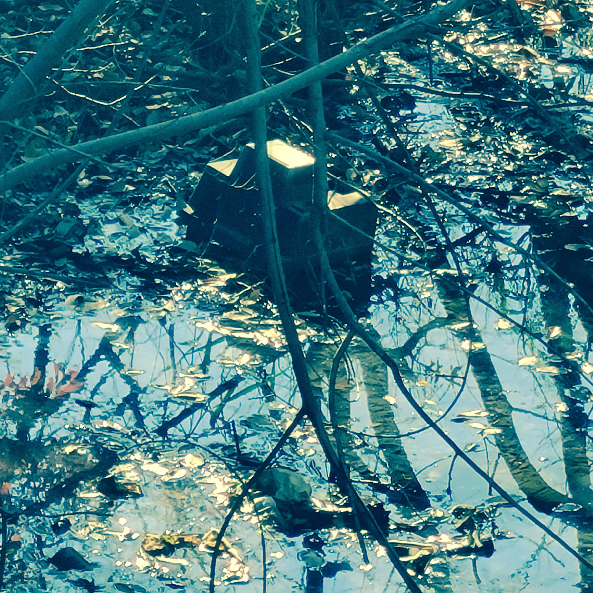

News
- 11/20/2022 - 02/26/2023
- 1st. MIMOCA EYE
- Shun Ikezoe "Waiting to hear from you 声を待つ" (sound design: Nobuhiko Hayashi)
- Marugame Genichiro-Inokuma Museum of Contemporary Art, Kagawa, Japan
- 11/05/2022
- Aya Kawazoe film "Night Train 夜の電車" (sound design) - webcast started
- kortfilm.be
- 02/04-20/2022
- Aya Kawazoe “Night Train” (sound design: Nobuhiko Hayashi) | 川添彩『夜の電車』（音響デザイン：林暢彦）
- @ The Yebisu International Festival for Art & Alternative Visions 2022 / info
- 02/02/2022
- Kokichi Yanagisawa + Nobuhiko Hayashi Duo (video document) | 柳沢耕吉 + 林暢彦 デュオ（記録動画）
- YouTube
- 10/10/2021
- Sound design for FOREST-FOLK MUSEUM KASUGA | 春日 森の文化博物館 音響デザイン
-
- @ FOREST-FOLK MUSEUM KASUGA, Gifu / info(IAMAS)
-
- 07/08/2021
- “Graft the Voices” special website
- website
- 04/24 - 05/08/2021
- Humongous! + Film Works by Aya Kawazoe | とてつもなく大きな ＋川添彩監督作品特集上映
- @ Theatre Image Forum, Tokyo / info
^
To top